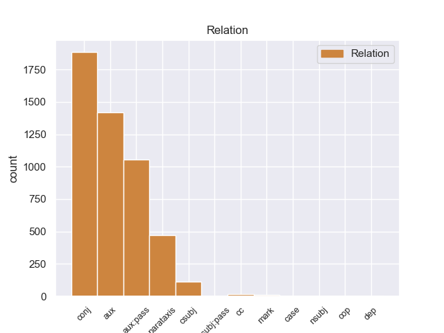
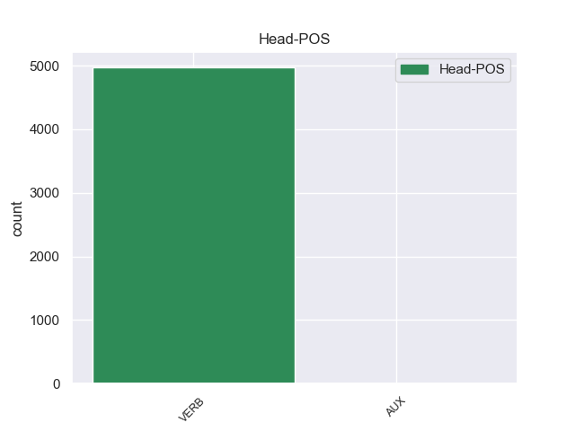
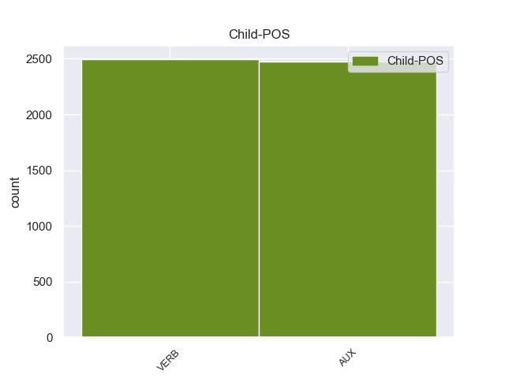

Distribution of features within this leaf



Agreement Rules sorted by frequency.
- When the dependent token is the conjunct(conj) of the head token,
1 De _ _ _ _ 0 _ _ _
2 los _ _ _ _ 0 _ _ _
3 714 _ _ _ _ 0 _ _ _
4 habitantes _ _ _ _ 0 _ _ _
5 , _ _ _ _ 0 _ _ _
6 el _ _ _ _ 0 _ _ _
7 municipio _ _ _ _ 0 _ _ _
8 de _ _ _ _ 0 _ _ _
9 Daggett _ _ _ _ 0 _ _ _
10 estaba estar VERB _ Mood=Ind|Number=Sing|Person=3|Tense=Imp|VerbForm=Fin 0 _ _ _
11 compuesto _ _ _ _ 0 _ _ _
12 por _ _ _ _ 0 _ _ _
13 el _ _ _ _ 0 _ _ _
14 93.28 _ _ _ _ 0 _ _ _
15 % _ _ _ _ 0 _ _ _
16 blancos _ _ _ _ 0 _ _ _
17 , _ _ _ _ 0 _ _ _
18 el _ _ _ _ 0 _ _ _
19 2.38 _ _ _ _ 0 _ _ _
20 % _ _ _ _ 0 _ _ _
21 eran _ _ _ _ 0 _ _ _
22 afroamericanos _ _ _ _ 0 _ _ _
23 , _ _ _ _ 0 _ _ _
24 el _ _ _ _ 0 _ _ _
25 0.84 _ _ _ _ 0 _ _ _
26 % _ _ _ _ 0 _ _ _
27 eran _ _ _ _ 0 _ _ _
28 amerindios _ _ _ _ 0 _ _ _
29 , _ _ _ _ 0 _ _ _
30 el _ _ _ _ 0 _ _ _
31 0.56 _ _ _ _ 0 _ _ _
32 % _ _ _ _ 0 _ _ _
33 eran _ _ _ _ 0 _ _ _
34 asiáticos _ _ _ _ 0 _ _ _
35 , _ _ _ _ 0 _ _ _
36 el _ _ _ _ 0 _ _ _
37 0 _ _ _ _ 0 _ _ _
38 % _ _ _ _ 0 _ _ _
39 eran _ _ _ _ 0 _ _ _
40 isleños _ _ _ _ 0 _ _ _
41 de _ _ _ _ 0 _ _ _
42 el _ _ _ _ 0 _ _ _
43 Pacífico _ _ _ _ 0 _ _ _
44 , _ _ _ _ 0 _ _ _
45 el _ _ _ _ 0 _ _ _
46 0.84 _ _ _ _ 0 _ _ _
47 % _ _ _ _ 0 _ _ _
48 eran _ _ _ _ 0 _ _ _
49 de _ _ _ _ 0 _ _ _
50 otras _ _ _ _ 0 _ _ _
51 razas _ _ _ _ 0 _ _ _
52 y _ _ _ _ 0 _ _ _
53 el _ _ _ _ 0 _ _ _
54 2.1 _ _ _ _ 0 _ _ _
55 % _ _ _ _ 0 _ _ _
56 pertenecían pertenecer VERB _ Mood=Ind|Number=Plur|Person=3|Tense=Imp|VerbForm=Fin 10 conj _ _
57 a _ _ _ _ 0 _ _ _
58 dos _ _ _ _ 0 _ _ _
59 o _ _ _ _ 0 _ _ _
60 más _ _ _ _ 0 _ _ _
61 razas _ _ _ _ 0 _ _ _
62 . _ _ _ _ 0 _ _ _
1 En _ _ _ _ 0 _ _ _
2 estos _ _ _ _ 0 _ _ _
3 trabajos _ _ _ _ 0 _ _ _
4 se _ _ _ _ 0 _ _ _
5 pusieron _ _ _ _ 0 _ _ _
6 a _ _ _ _ 0 _ _ _
7 el _ _ _ _ 0 _ _ _
8 descubierto _ _ _ _ 0 _ _ _
9 25 _ _ _ _ 0 _ _ _
10 vanos _ _ _ _ 0 _ _ _
11 correspondientes _ _ _ _ 0 _ _ _
12 a _ _ _ _ 0 _ _ _
13 ventanas _ _ _ _ 0 _ _ _
14 saeteras _ _ _ _ 0 _ _ _
15 que _ _ _ _ 0 _ _ _
16 habían _ _ _ _ 0 _ _ _
17 sido ser AUX _ Gender=Masc|Number=Sing|Tense=Past|VerbForm=Part 18 aux:pass _ _
18 tapiadas tapiado VERB _ Gender=Fem|Number=Plur|Tense=Past|VerbForm=Part 0 _ _ _
19 en _ _ _ _ 0 _ _ _
20 los _ _ _ _ 0 _ _ _
21 siglos _ _ _ _ 0 _ _ _
22 anteriores _ _ _ _ 0 _ _ _
23 . _ _ _ _ 0 _ _ _
1 Aunque _ _ _ _ 0 _ _ _
2 se _ _ _ _ 0 _ _ _
3 puede _ _ _ _ 0 _ _ _
4 decir _ _ _ _ 0 _ _ _
5 que _ _ _ _ 0 _ _ _
6 tanto _ _ _ _ 0 _ _ _
7 el _ _ _ _ 0 _ _ _
8 Cyberpunk _ _ _ _ 0 _ _ _
9 ( _ _ _ _ 0 _ _ _
10 en _ _ _ _ 0 _ _ _
11 este _ _ _ _ 0 _ _ _
12 caso _ _ _ _ 0 _ _ _
13 orientado _ _ _ _ 0 _ _ _
14 con _ _ _ _ 0 _ _ _
15 la _ _ _ _ 0 _ _ _
16 cultura _ _ _ _ 0 _ _ _
17 gótica _ _ _ _ 0 _ _ _
18 ) _ _ _ _ 0 _ _ _
19 y _ _ _ _ 0 _ _ _
20 el _ _ _ _ 0 _ _ _
21 Steampunk _ _ _ _ 0 _ _ _
22 son ser VERB _ Mood=Ind|Number=Plur|Person=3|Tense=Pres|VerbForm=Fin 0 _ _ _
23 como _ _ _ _ 0 _ _ _
24 " _ _ _ _ 0 _ _ _
25 hermanos _ _ _ _ 0 _ _ _
26 lejanos _ _ _ _ 0 _ _ _
27 " _ _ _ _ 0 _ _ _
28 porque _ _ _ _ 0 _ _ _
29 ambas _ _ _ _ 0 _ _ _
30 posturas _ _ _ _ 0 _ _ _
31 se _ _ _ _ 0 _ _ _
32 concentran concentrar VERB _ Mood=Ind|Number=Plur|Person=3|Tense=Pres|VerbForm=Fin 22 advcl _ _
33 en _ _ _ _ 0 _ _ _
34 futurismos _ _ _ _ 0 _ _ _
35 , _ _ _ _ 0 _ _ _
36 aunque _ _ _ _ 0 _ _ _
37 en _ _ _ _ 0 _ _ _
38 diferentes _ _ _ _ 0 _ _ _
39 formas _ _ _ _ 0 _ _ _
40 ( _ _ _ _ 0 _ _ _
41 retrofuturismo _ _ _ _ 0 _ _ _
42 y _ _ _ _ 0 _ _ _
43 profuturismo _ _ _ _ 0 _ _ _
44 , _ _ _ _ 0 _ _ _
45 respectivamente _ _ _ _ 0 _ _ _
46 ) _ _ _ _ 0 _ _ _
47 . _ _ _ _ 0 _ _ _
1 Una _ _ _ _ 0 _ _ _
2 vez _ _ _ _ 0 _ _ _
3 que _ _ _ _ 0 _ _ _
4 el _ _ _ _ 0 _ _ _
5 Hijo _ _ _ _ 0 _ _ _
6 de _ _ _ _ 0 _ _ _
7 Krypton _ _ _ _ 0 _ _ _
8 suelta suelto VERB _ Mood=Ind|Number=Sing|Person=3|Tense=Pres|VerbForm=Fin 0 _ _ _
9 el _ _ _ _ 0 _ _ _
10 misil _ _ _ _ 0 _ _ _
11 , _ _ _ _ 0 _ _ _
12 este _ _ _ _ 0 _ _ _
13 intenta intentar VERB _ Mood=Ind|Number=Sing|Person=3|Tense=Pres|VerbForm=Fin 8 parataxis _ _
14 huir _ _ _ _ 0 _ _ _
15 de _ _ _ _ 0 _ _ _
16 el _ _ _ _ 0 _ _ _
17 lugar _ _ _ _ 0 _ _ _
18 pero _ _ _ _ 0 _ _ _
19 es _ _ _ _ 0 _ _ _
20 atrapado _ _ _ _ 0 _ _ _
21 en _ _ _ _ 0 _ _ _
22 la _ _ _ _ 0 _ _ _
23 explosión _ _ _ _ 0 _ _ _
24 . _ _ _ _ 0 _ _ _
1 Da _ _ _ _ 0 _ _ _
2 la _ _ _ _ 0 _ _ _
3 sensación _ _ _ _ 0 _ _ _
4 de _ _ _ _ 0 _ _ _
5 que _ _ _ _ 0 _ _ _
6 no _ _ _ _ 0 _ _ _
7 les _ _ _ _ 0 _ _ _
8 gusta gustar VERB _ Mood=Ind|Number=Sing|Person=3|Tense=Pres|VerbForm=Fin 0 _ _ _
9 que _ _ _ _ 0 _ _ _
10 les _ _ _ _ 0 _ _ _
11 compliquen complicar VERB _ Mood=Sub|Number=Plur|Person=3|Tense=Pres|VerbForm=Fin 8 csubj _ _
12 la _ _ _ _ 0 _ _ _
13 mañana _ _ _ _ 0 _ _ _
14 . _ _ _ _ 0 _ _ _
1 El _ _ _ _ 0 _ _ _
2 entrenador _ _ _ _ 0 _ _ _
3 serbio _ _ _ _ 0 _ _ _
4 confía _ _ _ _ 0 _ _ _
5 en _ _ _ _ 0 _ _ _
6 el _ _ _ _ 0 _ _ _
7 jerezano _ _ _ _ 0 _ _ _
8 , _ _ _ _ 0 _ _ _
9 que _ _ _ _ 0 _ _ _
10 se _ _ _ _ 0 _ _ _
11 convierte _ _ _ _ 0 _ _ _
12 en _ _ _ _ 0 _ _ _
13 parte _ _ _ _ 0 _ _ _
14 fundamental _ _ _ _ 0 _ _ _
15 de _ _ _ _ 0 _ _ _
16 el _ _ _ _ 0 _ _ _
17 equipo _ _ _ _ 0 _ _ _
18 que _ _ _ _ 0 _ _ _
19 consigue _ _ _ _ 0 _ _ _
20 " _ _ _ _ 0 _ _ _
21 El _ _ _ _ 0 _ _ _
22 Doblete _ _ _ _ 0 _ _ _
23 " _ _ _ _ 0 _ _ _
24 , _ _ _ _ 0 _ _ _
25 es ser VERB _ Mood=Ind|Number=Sing|Person=3|Tense=Pres|VerbForm=Fin 29 cc _ _
26 decir _ _ _ _ 0 _ _ _
27 , _ _ _ _ 0 _ _ _
28 que _ _ _ _ 0 _ _ _
29 gana ganar VERB _ Mood=Ind|Number=Sing|Person=3|Tense=Pres|VerbForm=Fin 0 _ _ _
30 la _ _ _ _ 0 _ _ _
31 Liga _ _ _ _ 0 _ _ _
32 y _ _ _ _ 0 _ _ _
33 la _ _ _ _ 0 _ _ _
34 Copa _ _ _ _ 0 _ _ _
35 de _ _ _ _ 0 _ _ _
36 el _ _ _ _ 0 _ _ _
37 Rey _ _ _ _ 0 _ _ _
38 de _ _ _ _ 0 _ _ _
39 Fútbol _ _ _ _ 0 _ _ _
40 en _ _ _ _ 0 _ _ _
41 esa _ _ _ _ 0 _ _ _
42 misma _ _ _ _ 0 _ _ _
43 campaña _ _ _ _ 0 _ _ _
44 . _ _ _ _ 0 _ _ _
1 Los _ _ _ _ 0 _ _ _
2 resultados _ _ _ _ 0 _ _ _
3 de _ _ _ _ 0 _ _ _
4 las _ _ _ _ 0 _ _ _
5 elecciones _ _ _ _ 0 _ _ _
6 internas _ _ _ _ 0 _ _ _
7 consagraron _ _ _ _ 0 _ _ _
8 el _ _ _ _ 0 _ _ _
9 liderazgo _ _ _ _ 0 _ _ _
10 de _ _ _ _ 0 _ _ _
11 de _ _ _ _ 0 _ _ _
12 la _ _ _ _ 0 _ _ _
13 Sota _ _ _ _ 0 _ _ _
14 , _ _ _ _ 0 _ _ _
15 dado dado VERB _ Gender=Masc|Number=Sing|Tense=Past|VerbForm=Part 20 mark _ _
16 que _ _ _ _ 0 _ _ _
17 el _ _ _ _ 0 _ _ _
18 Peronismo _ _ _ _ 0 _ _ _
19 Renovador _ _ _ _ 0 _ _ _
20 obtuvo obtener VERB _ Mood=Ind|Number=Sing|Person=3|Tense=Past|VerbForm=Fin 0 _ _ _
21 el _ _ _ _ 0 _ _ _
22 86,98 _ _ _ _ 0 _ _ _
23 % _ _ _ _ 0 _ _ _
24 de _ _ _ _ 0 _ _ _
25 los _ _ _ _ 0 _ _ _
26 votos _ _ _ _ 0 _ _ _
27 para _ _ _ _ 0 _ _ _
28 el _ _ _ _ 0 _ _ _
29 candidato _ _ _ _ 0 _ _ _
30 a _ _ _ _ 0 _ _ _
31 gobernador _ _ _ _ 0 _ _ _
32 y _ _ _ _ 0 _ _ _
33 el _ _ _ _ 0 _ _ _
34 82,35 _ _ _ _ 0 _ _ _
35 % _ _ _ _ 0 _ _ _
36 para _ _ _ _ 0 _ _ _
37 el _ _ _ _ 0 _ _ _
38 candidato _ _ _ _ 0 _ _ _
39 a _ _ _ _ 0 _ _ _
40 intendente _ _ _ _ 0 _ _ _
41 . _ _ _ _ 0 _ _ _
1 Nacido nacido VERB _ Gender=Masc|Number=Sing|Tense=Past|VerbForm=Part 0 _ _ _
2 el _ _ _ _ 0 _ _ _
3 5 _ _ _ _ 0 _ _ _
4 de _ _ _ _ 0 _ _ _
5 enero _ _ _ _ 0 _ _ _
6 de _ _ _ _ 0 _ _ _
7 1893 _ _ _ _ 0 _ _ _
8 , _ _ _ _ 0 _ _ _
9 cuando _ _ _ _ 0 _ _ _
10 contaba _ _ _ _ 0 _ _ _
11 con _ _ _ _ 0 _ _ _
12 8 _ _ _ _ 0 _ _ _
13 años _ _ _ _ 0 _ _ _
14 falleció fallecer VERB _ Mood=Ind|Number=Sing|Person=3|Tense=Past|VerbForm=Fin 1 dep _ _
15 su _ _ _ _ 0 _ _ _
16 padre _ _ _ _ 0 _ _ _
17 , _ _ _ _ 0 _ _ _
18 Ramón _ _ _ _ 0 _ _ _
19 M _ _ _ _ 0 _ _ _
20 ª _ _ _ _ 0 _ _ _
21 Tenreiro _ _ _ _ 0 _ _ _
22 Fernández _ _ _ _ 0 _ _ _
23 , _ _ _ _ 0 _ _ _
24 quedando _ _ _ _ 0 _ _ _
25 bajo _ _ _ _ 0 _ _ _
26 la _ _ _ _ 0 _ _ _
27 tutela _ _ _ _ 0 _ _ _
28 de _ _ _ _ 0 _ _ _
29 su _ _ _ _ 0 _ _ _
30 tío _ _ _ _ 0 _ _ _
31 materno _ _ _ _ 0 _ _ _
32 , _ _ _ _ 0 _ _ _
33 Ricardo _ _ _ _ 0 _ _ _
34 Rodríguez _ _ _ _ 0 _ _ _
35 Pastor _ _ _ _ 0 _ _ _
36 . _ _ _ _ 0 _ _ _
1 Entonces _ _ _ _ 0 _ _ _
2 los _ _ _ _ 0 _ _ _
3 líderes _ _ _ _ 0 _ _ _
4 gibelinos _ _ _ _ 0 _ _ _
5 se _ _ _ _ 0 _ _ _
6 reunieron _ _ _ _ 0 _ _ _
7 en _ _ _ _ 0 _ _ _
8 Empoli _ _ _ _ 0 _ _ _
9 y _ _ _ _ 0 _ _ _
10 se _ _ _ _ 0 _ _ _
11 decidió _ _ _ _ 0 _ _ _
12 arrasar _ _ _ _ 0 _ _ _
13 Florencia _ _ _ _ 0 _ _ _
14 : _ _ _ _ 0 _ _ _
15 fue ser AUX _ Mood=Ind|Number=Sing|Person=3|Tense=Past|VerbForm=Fin 0 _ _ _
16 Farinata farinata VERB _ Gender=Fem|Number=Sing|Tense=Past|VerbForm=Part 15 nsubj _ _
17 quien _ _ _ _ 0 _ _ _
18 bochó _ _ _ _ 0 _ _ _
19 la _ _ _ _ 0 _ _ _
20 iniciativa _ _ _ _ 0 _ _ _
21 , _ _ _ _ 0 _ _ _
22 y _ _ _ _ 0 _ _ _
23 así _ _ _ _ 0 _ _ _
24 volvió _ _ _ _ 0 _ _ _
25 triunfante _ _ _ _ 0 _ _ _
26 a _ _ _ _ 0 _ _ _
27 la _ _ _ _ 0 _ _ _
28 ciudad _ _ _ _ 0 _ _ _
29 , _ _ _ _ 0 _ _ _
30 donde _ _ _ _ 0 _ _ _
31 murió _ _ _ _ 0 _ _ _
32 en _ _ _ _ 0 _ _ _
33 1264 _ _ _ _ 0 _ _ _
34 . _ _ _ _ 0 _ _ _
Disagree Examples:
1 El _ _ _ _ 0 _ _ _
2 Sevilla _ _ _ _ 0 _ _ _
3 cerrará cerrar VERB _ Mood=Ind|Number=Sing|Person=3|Tense=Fut|VerbForm=Fin 0 _ _ _
4 el _ _ _ _ 0 _ _ _
5 fichaje _ _ _ _ 0 _ _ _
6 de _ _ _ _ 0 _ _ _
7 un _ _ _ _ 0 _ _ _
8 central _ _ _ _ 0 _ _ _
9 en _ _ _ _ 0 _ _ _
10 los _ _ _ _ 0 _ _ _
11 próximos _ _ _ _ 0 _ _ _
12 días _ _ _ _ 0 _ _ _
13 y _ _ _ _ 0 _ _ _
14 se _ _ _ _ 0 _ _ _
15 trata tratar VERB _ Mood=Ind|Number=Sing|Person=3|Tense=Pres|VerbForm=Fin 3 conj _ _
16 de _ _ _ _ 0 _ _ _
17 un _ _ _ _ 0 _ _ _
18 futbolista _ _ _ _ 0 _ _ _
19 que _ _ _ _ 0 _ _ _
20 se _ _ _ _ 0 _ _ _
21 llama _ _ _ _ 0 _ _ _
22 Spahic _ _ _ _ 0 _ _ _
23 y _ _ _ _ 0 _ _ _
24 juega _ _ _ _ 0 _ _ _
25 actualmente _ _ _ _ 0 _ _ _
26 en _ _ _ _ 0 _ _ _
27 el _ _ _ _ 0 _ _ _
28 Montpellier _ _ _ _ 0 _ _ _
29 francés _ _ _ _ 0 _ _ _
30 donde _ _ _ _ 0 _ _ _
31 disputa _ _ _ _ 0 _ _ _
32 la _ _ _ _ 0 _ _ _
33 Ligue _ _ _ _ 0 _ _ _
34 1 _ _ _ _ 0 _ _ _
35 desde _ _ _ _ 0 _ _ _
36 hace _ _ _ _ 0 _ _ _
37 varios _ _ _ _ 0 _ _ _
38 años _ _ _ _ 0 _ _ _
39 junto _ _ _ _ 0 _ _ _
40 a _ _ _ _ 0 _ _ _
41 otros _ _ _ _ 0 _ _ _
42 jugadores _ _ _ _ 0 _ _ _
43 . _ _ _ _ 0 _ _ _
1 El _ _ _ _ 0 _ _ _
2 níquel _ _ _ _ 0 _ _ _
3 incumple incumplir VERB _ Mood=Ind|Number=Sing|Person=3|Tense=Pres|VerbForm=Fin 0 _ _ _
4 el _ _ _ _ 0 _ _ _
5 plan _ _ _ _ 0 _ _ _
6 de _ _ _ _ 0 _ _ _
7 producción _ _ _ _ 0 _ _ _
8 y _ _ _ _ 0 _ _ _
9 de _ _ _ _ 0 _ _ _
10 exportaciones _ _ _ _ 0 _ _ _
11 en _ _ _ _ 0 _ _ _
12 6 _ _ _ _ 0 _ _ _
13 mil _ _ _ _ 0 _ _ _
14 700 _ _ _ _ 0 _ _ _
15 toneladas _ _ _ _ 0 _ _ _
16 , _ _ _ _ 0 _ _ _
17 lo _ _ _ _ 0 _ _ _
18 que _ _ _ _ 0 _ _ _
19 significó significar VERB _ Mood=Ind|Number=Sing|Person=3|Tense=Past|VerbForm=Fin 3 parataxis _ _
20 dejar _ _ _ _ 0 _ _ _
21 de _ _ _ _ 0 _ _ _
22 ingresar _ _ _ _ 0 _ _ _
23 unos _ _ _ _ 0 _ _ _
24 120 _ _ _ _ 0 _ _ _
25 millones _ _ _ _ 0 _ _ _
26 de _ _ _ _ 0 _ _ _
27 dólares _ _ _ _ 0 _ _ _
28 , _ _ _ _ 0 _ _ _
29 también _ _ _ _ 0 _ _ _
30 en _ _ _ _ 0 _ _ _
31 condiciones _ _ _ _ 0 _ _ _
32 de _ _ _ _ 0 _ _ _
33 una _ _ _ _ 0 _ _ _
34 coyuntura _ _ _ _ 0 _ _ _
35 de _ _ _ _ 0 _ _ _
36 precios _ _ _ _ 0 _ _ _
37 más _ _ _ _ 0 _ _ _
38 favorable _ _ _ _ 0 _ _ _
39 que _ _ _ _ 0 _ _ _
40 la _ _ _ _ 0 _ _ _
41 prevista _ _ _ _ 0 _ _ _
42 en _ _ _ _ 0 _ _ _
43 el _ _ _ _ 0 _ _ _
44 Plan _ _ _ _ 0 _ _ _
45 . _ _ _ _ 0 _ _ _
1 Amaya _ _ _ _ 0 _ _ _
2 refirió _ _ _ _ 0 _ _ _
3 que _ _ _ _ 0 _ _ _
4 a _ _ _ _ 0 _ _ _
5 nivel _ _ _ _ 0 _ _ _
6 nacional _ _ _ _ 0 _ _ _
7 hay _ _ _ _ 0 _ _ _
8 7,870 _ _ _ _ 0 _ _ _
9 trabajadores _ _ _ _ 0 _ _ _
10 no _ _ _ _ 0 _ _ _
11 docentes _ _ _ _ 0 _ _ _
12 , _ _ _ _ 0 _ _ _
13 quienes _ _ _ _ 0 _ _ _
14 " _ _ _ _ 0 _ _ _
15 hemos _ _ _ _ 0 _ _ _
16 decidido _ _ _ _ 0 _ _ _
17 que _ _ _ _ 0 _ _ _
18 si _ _ _ _ 0 _ _ _
19 vamos ir VERB _ Mood=Ind|Number=Plur|Person=1|Tense=Pres|VerbForm=Fin 28 advcl _ _
20 a _ _ _ _ 0 _ _ _
21 paro _ _ _ _ 0 _ _ _
22 el _ _ _ _ 0 _ _ _
23 lunes _ _ _ _ 0 _ _ _
24 ( _ _ _ _ 0 _ _ _
25 hoy _ _ _ _ 0 _ _ _
26 ) _ _ _ _ 0 _ _ _
27 se _ _ _ _ 0 _ _ _
28 afectará afectar VERB _ Mood=Ind|Number=Sing|Person=3|Tense=Fut|VerbForm=Fin 0 _ _ _
29 las _ _ _ _ 0 _ _ _
30 clases _ _ _ _ 0 _ _ _
31 , _ _ _ _ 0 _ _ _
32 porque _ _ _ _ 0 _ _ _
33 nosotros _ _ _ _ 0 _ _ _
34 somos _ _ _ _ 0 _ _ _
35 los _ _ _ _ 0 _ _ _
36 que _ _ _ _ 0 _ _ _
37 estamos _ _ _ _ 0 _ _ _
38 en _ _ _ _ 0 _ _ _
39 los _ _ _ _ 0 _ _ _
40 centros _ _ _ _ 0 _ _ _
41 educativos _ _ _ _ 0 _ _ _
42 " _ _ _ _ 0 _ _ _
43 , _ _ _ _ 0 _ _ _
44 sentenció _ _ _ _ 0 _ _ _
45 . _ _ _ _ 0 _ _ _
1 Su _ _ _ _ 0 _ _ _
2 detención _ _ _ _ 0 _ _ _
3 ocurrió ocurrir VERB _ Mood=Ind|Number=Sing|Person=3|Tense=Past|VerbForm=Fin 0 _ _ _
4 alrededor _ _ _ _ 0 _ _ _
5 de _ _ _ _ 0 _ _ _
6 las _ _ _ _ 0 _ _ _
7 02:10 _ _ _ _ 0 _ _ _
8 horas _ _ _ _ 0 _ _ _
9 de _ _ _ _ 0 _ _ _
10 ayer _ _ _ _ 0 _ _ _
11 , _ _ _ _ 0 _ _ _
12 cuando _ _ _ _ 0 _ _ _
13 intentaba intentar VERB _ Mood=Ind|Number=Sing|Person=3|Tense=Imp|VerbForm=Fin 3 advcl _ _
14 escapar _ _ _ _ 0 _ _ _
15 en _ _ _ _ 0 _ _ _
16 el _ _ _ _ 0 _ _ _
17 taxi _ _ _ _ 0 _ _ _
18 que _ _ _ _ 0 _ _ _
19 acababa _ _ _ _ 0 _ _ _
20 de _ _ _ _ 0 _ _ _
21 robar _ _ _ _ 0 _ _ _
22 . _ _ _ _ 0 _ _ _
1 Aun _ _ _ _ 0 _ _ _
2 así _ _ _ _ 0 _ _ _
3 , _ _ _ _ 0 _ _ _
4 si _ _ _ _ 0 _ _ _
5 comparamos comparar VERB _ Mood=Ind|Number=Plur|Person=1|Tense=Pres|VerbForm=Fin 22 advcl _ _
6 esta _ _ _ _ 0 _ _ _
7 densidad _ _ _ _ 0 _ _ _
8 con _ _ _ _ 0 _ _ _
9 la _ _ _ _ 0 _ _ _
10 de _ _ _ _ 0 _ _ _
11 el _ _ _ _ 0 _ _ _
12 plomo _ _ _ _ 0 _ _ _
13 , _ _ _ _ 0 _ _ _
14 de _ _ _ _ 0 _ _ _
15 unos _ _ _ _ 0 _ _ _
16 11 _ _ _ _ 0 _ _ _
17 g _ _ _ _ 0 _ _ _
18 / _ _ _ _ 0 _ _ _
19 cm _ _ _ _ 0 _ _ _
20 ³ _ _ _ _ 0 _ _ _
21 , _ _ _ _ 0 _ _ _
22 vemos ver VERB _ Mood=Ind|Number=Plur|Person=1|Tense=Fut|VerbForm=Fin 0 _ _ _
23 que _ _ _ _ 0 _ _ _
24 representa _ _ _ _ 0 _ _ _
25 una _ _ _ _ 0 _ _ _
26 considerable _ _ _ _ 0 _ _ _
27 compresión _ _ _ _ 0 _ _ _
28 , _ _ _ _ 0 _ _ _
29 sobre _ _ _ _ 0 _ _ _
30 todo _ _ _ _ 0 _ _ _
31 cuando _ _ _ _ 0 _ _ _
32 se _ _ _ _ 0 _ _ _
33 considera _ _ _ _ 0 _ _ _
34 que _ _ _ _ 0 _ _ _
35 en _ _ _ _ 0 _ _ _
36 el _ _ _ _ 0 _ _ _
37 interior _ _ _ _ 0 _ _ _
38 de _ _ _ _ 0 _ _ _
39 el _ _ _ _ 0 _ _ _
40 blanco _ _ _ _ 0 _ _ _
41 tenemos _ _ _ _ 0 _ _ _
42 unas _ _ _ _ 0 _ _ _
43 densidades _ _ _ _ 0 _ _ _
44 iniciales _ _ _ _ 0 _ _ _
45 de _ _ _ _ 0 _ _ _
46 de _ _ _ _ 0 _ _ _
47 unos _ _ _ _ 0 _ _ _
48 0,1 _ _ _ _ 0 _ _ _
49 g _ _ _ _ 0 _ _ _
50 / _ _ _ _ 0 _ _ _
51 cm _ _ _ _ 0 _ _ _
52 ³ _ _ _ _ 0 _ _ _
53 de _ _ _ _ 0 _ _ _
54 DT _ _ _ _ 0 _ _ _
55 . _ _ _ _ 0 _ _ _